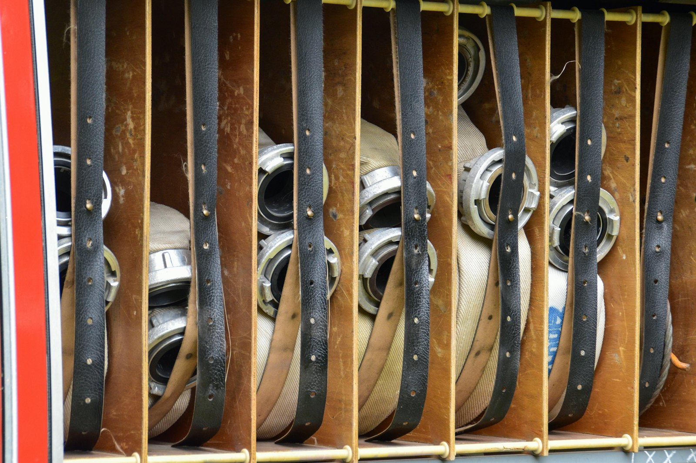
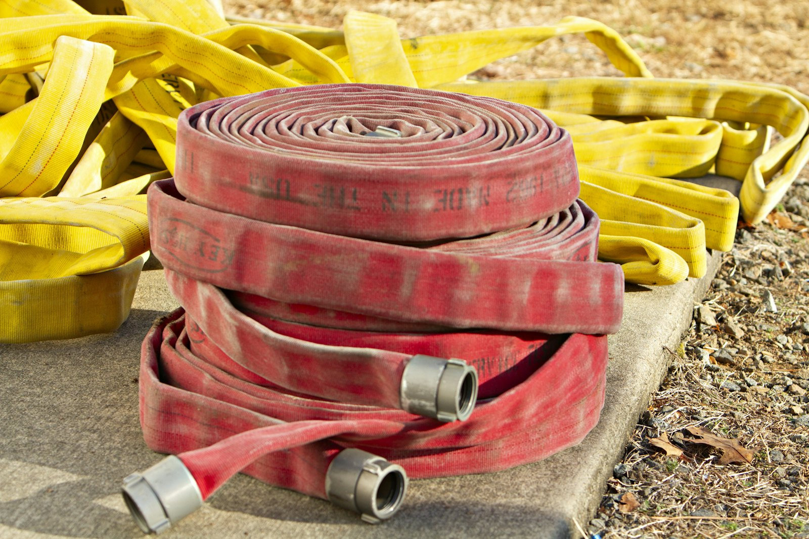

Wer kommt, wenn es brennt?
Deine Nachbarn.
Achtunddreißig Leute aus dem Dorf. Wenn der Melder geht, stehen sie auf, egal ob es drei Uhr nachts ist oder mitten in der Schicht. Wir suchen Verstärkung, und unten steht ehrlich, warum.
Das Einsatzjahr
Klicken Sie eine Einsatzart an, dann sehen Sie, wann diese Einsätze kommen. Die Balken zeigen die Tageszeit, von Mitternacht bis Mitternacht.

Was in der Halle steht
| Fahrzeug | Besatzung | Wasser | Baujahr |
|---|---|---|---|
| LF 10Löschgruppenfahrzeug, das Erste, das rausfährt | 1 / 8 | 1.200 l | 2019 |
| TSF-WTragkraftspritzenfahrzeug mit Wasser, für schmale Wege | 1 / 5 | 750 l | 2008 |
| MTFMannschaftstransportfahrzeug, bringt Leute und Gerät | 1 / 8 | — | 2014 |
Das TSF-W ist siebzehn Jahre alt. Es wird 2028 ersetzt, das steht im Bedarfsplan der Gemeinde.
Was es dich wirklich kostet
Kein Werbetext. Die Zahlen, die dich interessieren, bevor du dich meldest.
Freitags um 19 Uhr. Nicht jede Woche Pflicht, aber wer nie kommt, kann im Ernstfall nicht helfen.
Verteilt über mehrere Monate, meist samstags. Danach darfst du mit ins Fahrzeug.
Ausrüstung, Ausbildung, Versicherung trägt die Gemeinde. Du bringst Zeit mit, sonst nichts.

Nachwuchs
Wer als Kind anfängt, bleibt meistens. Zwei Drittel unserer Aktiven kommen aus der eigenen Jugendfeuerwehr. Deshalb hängt daran mehr als ein Nachmittagsangebot.
- 6 BIS 9BambiniEinmal im Monat, spielerisch, ohne Gerät
- 10 BIS 17JugendfeuerwehrAlle zwei Wochen freitags, mit echtem Gerät und Zeltlager im Sommer
- AB 16Grundausbildung möglichMit Einverständnis der Eltern, Einsatzdienst ab 18
Was Eltern meistens fragen:
- GEFAHRKommen Kinder an Einsätze?Nein. Die Jugendfeuerwehr fährt keine Einsätze, das ist gesetzlich ausgeschlossen.
- KOSTENWas kostet es?Nichts. Kleidung stellt die Gemeinde, Zeltlager übernimmt der Förderverein.
- ZEITMuss mein Kind immer?Nein. Schule und Sport gehen vor, das ist bei uns selbstverständlich.
Melde dich
Komm einfach freitags um 19 Uhr am Gerätehaus vorbei, Schulstraße 8. Oder schreib vorher, wenn dir das lieber ist. Im Notfall gilt immer die 112, nicht dieses Formular.